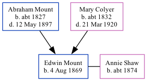

Edwin Henry Mount 1869 -
[ Home ] | [ Calendar ] | [ Surnames Index ] | [ Family History ]A boatman and the son of Abraham Mount (a mariner) and Mary Colyer (a charwoman), Edwin Mount, the great-great-uncle of <a href="I1.html">Nigel Horne</a>, was born in Herne, Kent, England on Aug 4, 1869<span class="citation">1,2,3</span> and baptized in Herne Bay, Kent, England on Oct 3, 1869. He married Annie Shaw there at Christ Church, on Jun 23, 1904.</p><p>Throughout his life, he lived on Salts Lane in Herne Bay on Apr 2, 1871<span class="citation">4</span>; and on 3 Kings Road in Herne Bay on Apr 2, 1911<span class="citation">5</span>.
Parents
- Abraham was born c. 1827
- Mary Ann was born c. 1832
Citations
- 1871 England Census Online publication - Provo, UT, USA: The Generations Network, Inc., 2004.Original data - Census Returns of England and Wales, 1871. Kew, Surrey, England: The National Archives of the UK (TNA): Public Record Office (PRO), 1871. Data imaged from the National
- 1911 England Census Online publication - Provo, UT, USA: Ancestry.com Operations, Inc., 2011.Original data - Census Returns of England and Wales, 1911. Kew, Surrey, England: The National Archives of the UK (TNA), 1911. Data imaged from the National Archives, London, England.
- England & Wales, FreeBMD Birth Index, 1837-1915 Online publication - Provo, UT, USA: The Generations Network, Inc., 2006.Original data - General Register Office. England and Wales Civil Registration Indexes. London, England: General Register Office. © Crown copyright. Published by permission of the Cont
- 1871 England, Wales & Scotland Census - Findmypast (was age 1 and the son of the head of the household)
- 1911 Census for England & Wales - Findmypast (was age 42 and a nephew in the household)
Media
1911 UK Census

England & Wales births 1837-2006 - BMD/B/1869/3/AZ/000466/319
Canterbury Baptisms - GBPRS/CANT/B/96677292
Canterbury Marriages Transcription - GBPRS-CANT-M-97074273-1
Kent, Canterbury Archdeaconry banns 1754-1928 - GBPRS/CANT/M/94100379/1
England & Wales marriages 1837-2008 - BMD/M/1904/2/AZ/000268/370
1871 England, Wales & Scotland Census - GBC/1871/0014201504
1911 Census for England & Wales - GBC/1911/RG14/04355/0087/4
England Births & Baptisms 1538-1975 - R_884300024
Family Tree
Generated by Ged2Site. Last updated on Jul 20, 2025